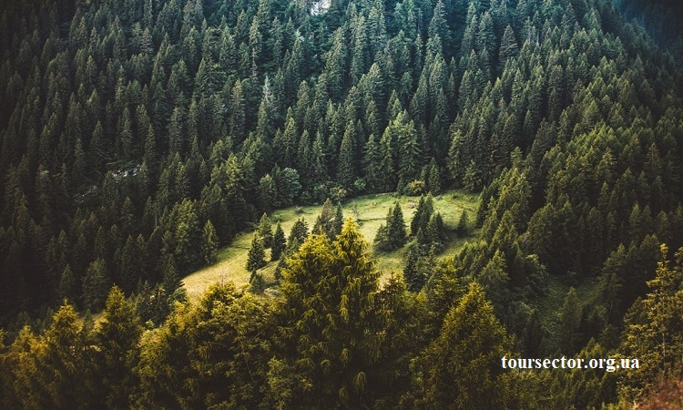
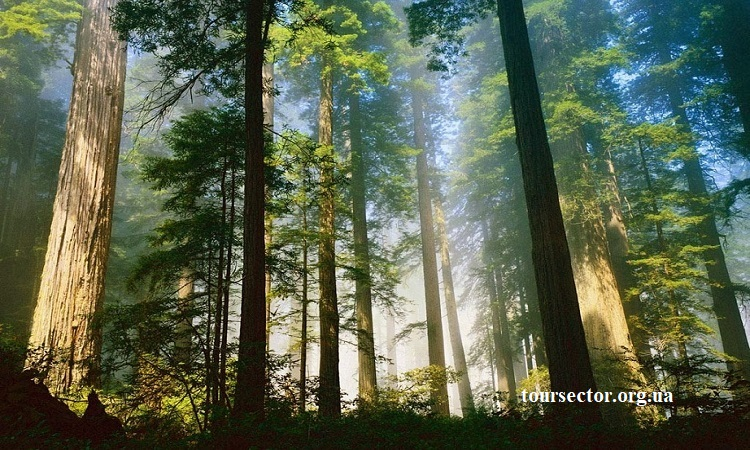

Карпаты — это один из крупнейших туристических регионов Украины
Многие приезжают сюда именно с целью оздоровиться, отдохнуть от грязи и пыли большого города. В Карпатах практически нет промышленных объектов. Вместо этого — огромные лесные массивы, нетронутая природа, уникальные породы растений. Благодаря этому воздух здесь всегда чистое.
Отдых в хвойном лесу Украина — это сочетание полезного и приятного. На территории Карпат есть множество санаториев, которые были построены еще во времена Австрийской империи. Сюда приезжали вельможи, чтобы поправить здоровье и полечить распространенные в те времена болезни дыхательной системы. В чем же особенность карпатского воздуха? Почему регион так популярен для рекреационного туризма?
И как хвойный воздух гор влияет на организм человека?

В общем все Карпаты — это огромная рекреационная зона. Даже на стандартных курортах можно отлично оздоровиться, потому что вокруг находится только древний лес и чистая вода. Горные источники — отдельная тема, потому что в регионе множество мест, где присутствует природная минеральная вода. Это и Трускавец, Яремче, и множество других здравниц.
Целебные свойства хвойного воздуха Карпат
Хвойные и хвойно-буковые леса Карпат — это настоящее сокровище, которое насыщает воздух в регионе фитонцидами. Эти вещества обладают антисептическим и очищающим действием. Они подавляют даже туберкулезную палочку, поэтому большинство санаториев для лечения этого заболевания находятся в хвойных лесах. Весенние Карпаты насыщенны фитонцидами в воздухе. В мае их количество в кислороде наибольшее.

Хвойный воздух полезен для лечения следующих заболеваний:
- проблемы центральной нервной системы;
- ослабление иммунитета;
- нарушения обмена веществ;
- заболевания сердечно-сосудистой системы;
- проблемы с артериальным давлением;
- заболевания дыхательной системы.
Хвойный лес в Карпатах — это источник витаминов групп В, Е, К. В нем больше витамина С, чем в лимонах. Эфирное масло хвои обладает противовоспалительными и успокаивающими свойствами. Местные жители не только дышат горным воздухом, но и использую шишки и иглы деревьев для создания настоек, чаев, варенья. Не стоит отказываться от таких гостинцев, потому что они — источник важных витаминов и микроэлементов.
Карпатский лес:
- хвойный воздух помогает нормализовать работу нервной системы;
- наладить работу дыхательных путей после тяжелой ситуации с кислородом в городе;
-
возможность избавиться от последствий стресса, депрессии,
психологических нагрузок
- насыщенный эфирными маслами, озонированный и очищенный воздух способствует успокоению, релаксации;
- много источников чистой минеральной воды.